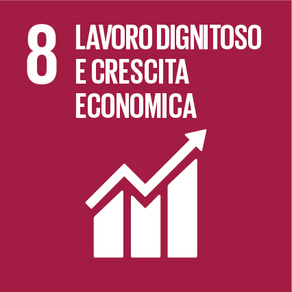

Target: 2027
Status 2025: Raggiunto
SDGs:



Target: 2027
Status 2025: Raggiunto

Il Piano 2023-2027 prevede il mantenimento e l’ottenimento di certificazioni di qualità, sicurezza alimentare, etiche e di prodotto per le società del Gruppo. Nel 2025 BF ha mantenuto le certificazioni già acquisite e ampliato il proprio presidio nelle società produttive.
Sono state ottenute nuove certificazioni BRCGS per lo stabilimento Legumi e Cereali di BF Agro-Industriale a Jolanda di Savoia e per lo stabilimento Gluten Free di BIA ad Argenta. È stato inoltre rafforzato il ricorso agli audit etici SMETA (Sedex Members Ethical Trade Audit), una metodologia di valutazione delle pratiche aziendali in materia di lavoro, salute e sicurezza, ambiente ed etica. Oltre al mantenimento degli audit per Ghigi 1870 e BIA, nel 2025 le verifiche sono state estese alla Riseria, allo stabilimento Legumi e Cereali di Jolanda di Savoia e allo stabilimento di San Felice sul Panaro di BF Agro-Industriale.
Questi standard contribuiscono a rafforzare qualità, sicurezza, comportamento etico, tutela ambientale e trasparenza nelle attività del Gruppo e nei rapporti commerciali.